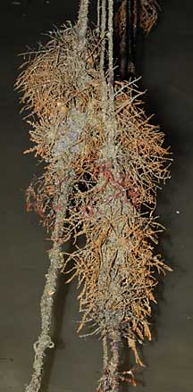
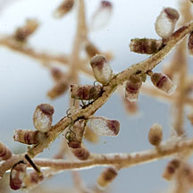
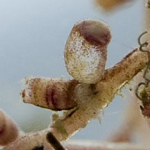
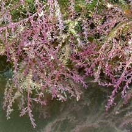
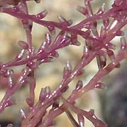
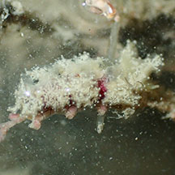
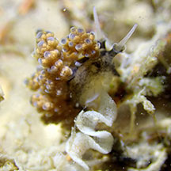
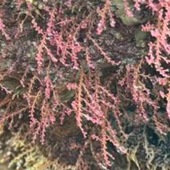

|
|
| hydroid text index | photo index |
| Phylum Cnidaria > Class Hydrozoa |
| Candy
hydroid awaiting identification* updated Mar 2020 Where seen? This colourful colony in candy colours of pink and orange is commonly encountered on our Northern shores, but often overlooked as it resembles a plant. It grows on rocks, jetty pillings, ropes and other hard surfaces. Features: Each 'frond' about 5-10cm long with short side branches. Small capsules arranged along the short side branches of the 'frond'. The fronds are short and often tangled, sometimes covered with encrusting organisms. Colours seen include bright pink and orange. It doesn't seem to have a sting that humans can feel. Hydroid friends: A tiny nudibranch is sometimes seen in this hydroid. |
 Changi, May 09 |
 Pulau Sekudu, May 12  |
 Tuas, Apr 04  |
 A nudibranch (Kabeiro rubroreticulata). Pulau Ubin, Jul 24 Photo by Chay Hoon on facebook. |
 A nudibranch (Doto sp.) laying eggs. Beting Bronok, Jun 25 Photo by Jianlin Liu on facebook. |
*Species are difficult to positively identify without close examination.
On this website, the animals are grouped by external features for convenience of display.
| Candy hydroids on Singapore shores |
On wildsingapore
flickr
|
| Other sightings on Singapore shores |
 |